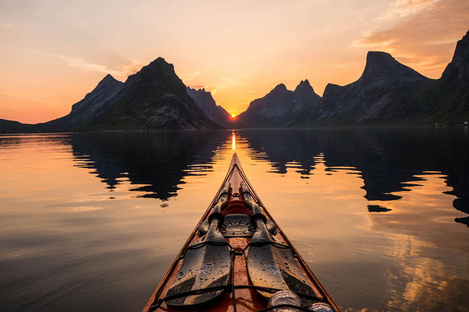
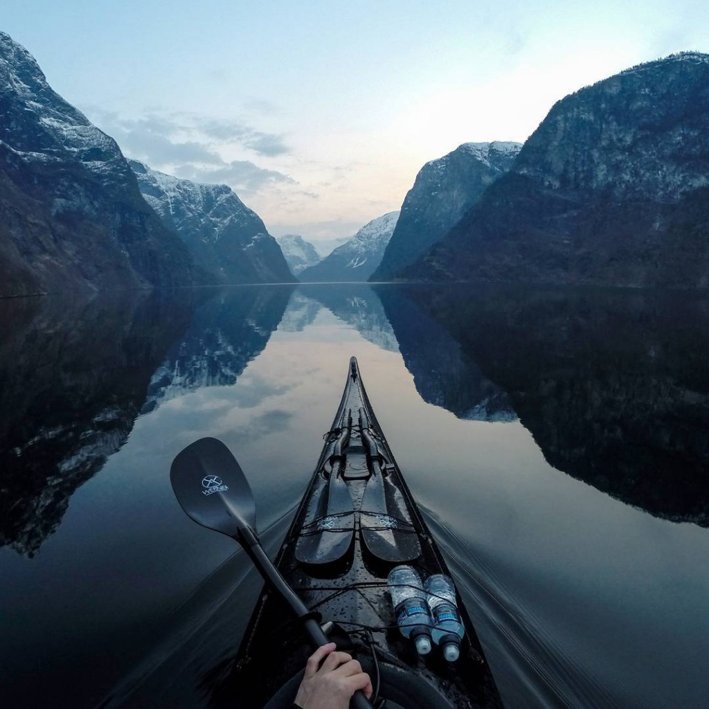
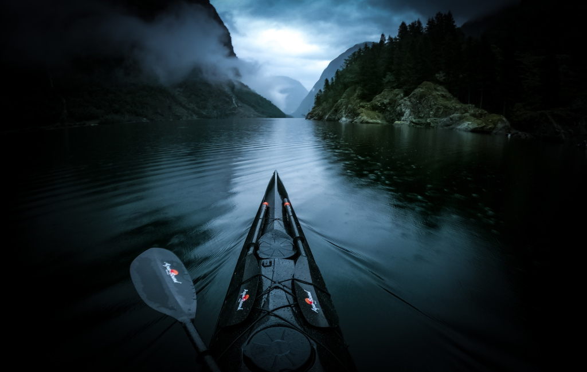
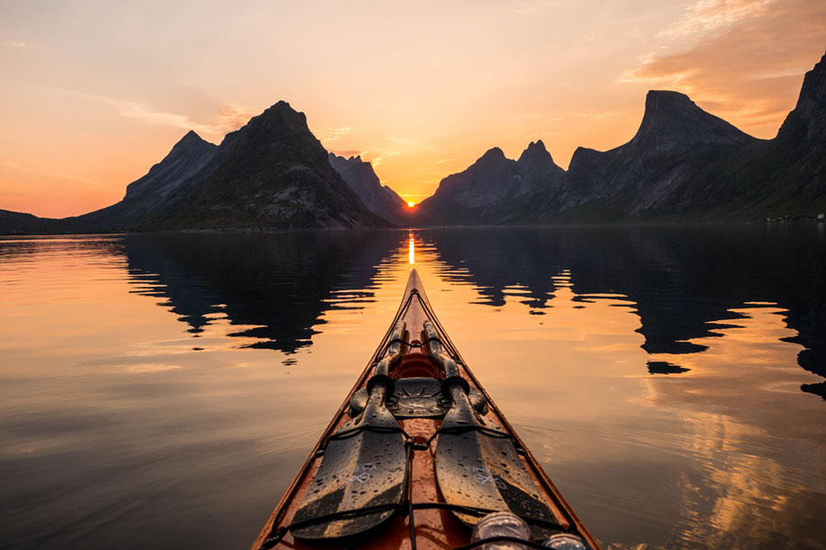
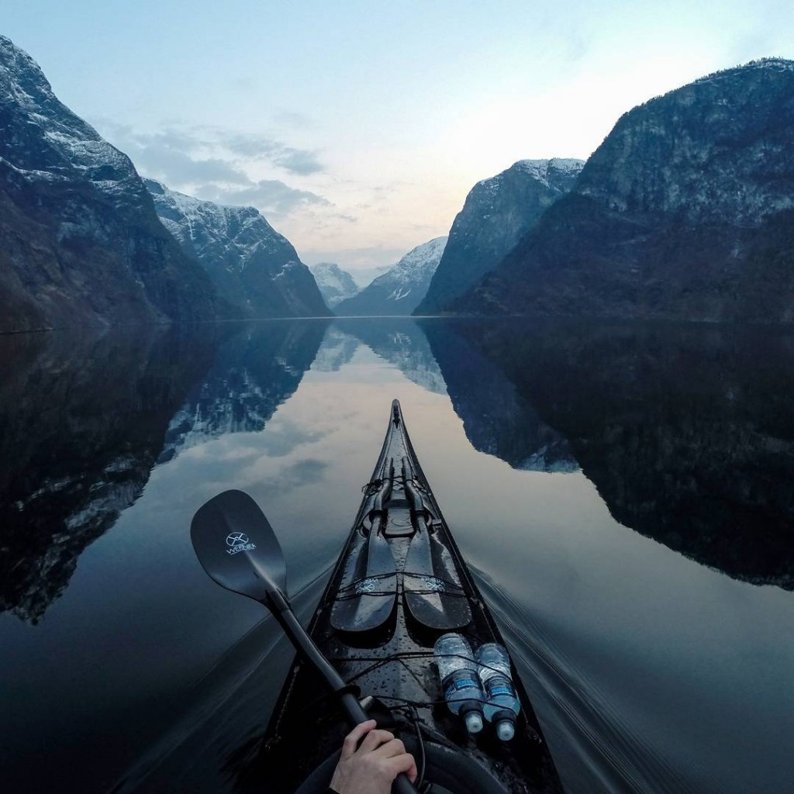
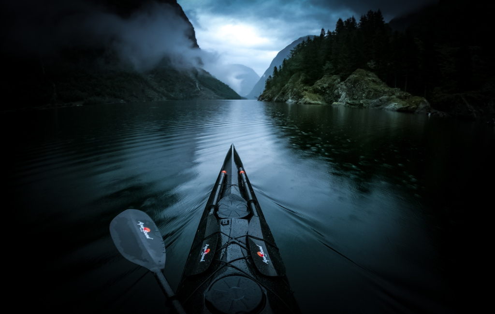
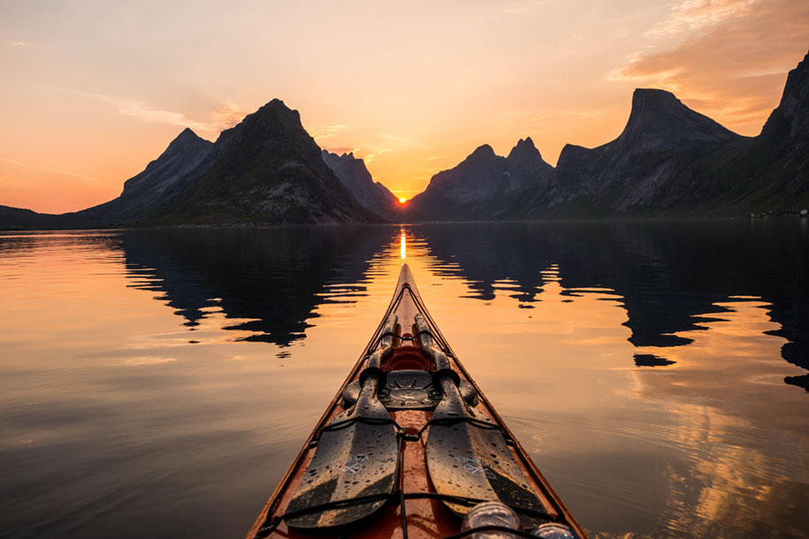
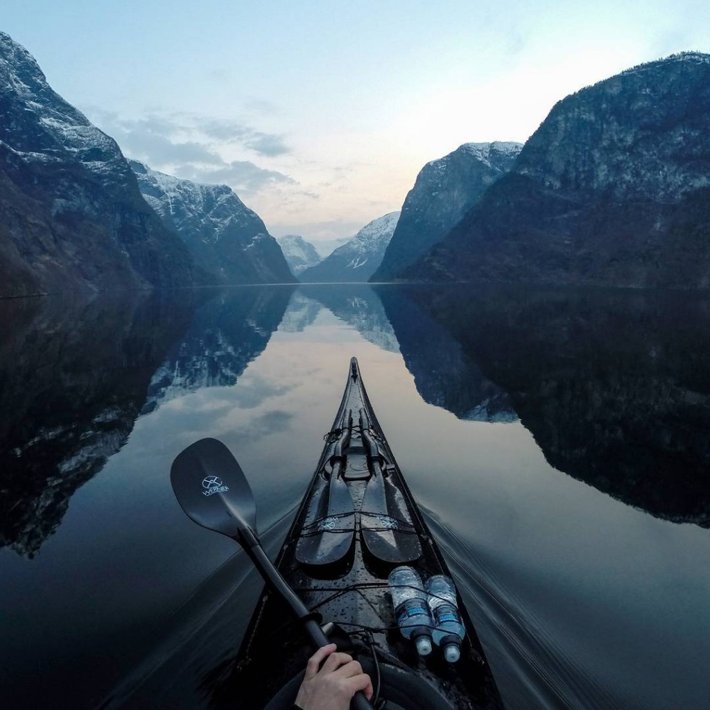
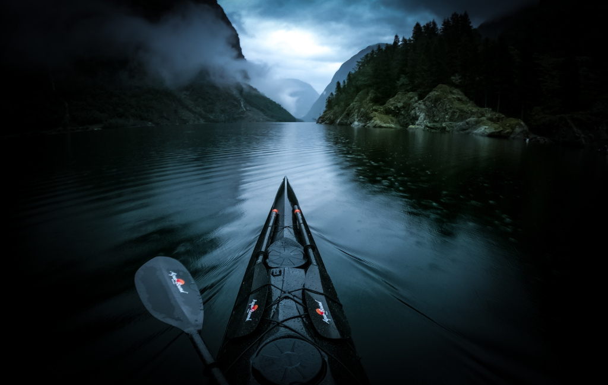

Ако сте заинтересовани за авантуре по водама Европе на овом сајту можете пронаћи најлепше локације на "Старом континенту". Језера, реке, планинске, равничарске, фјордови, Европа нуди прелепе дестинације.


